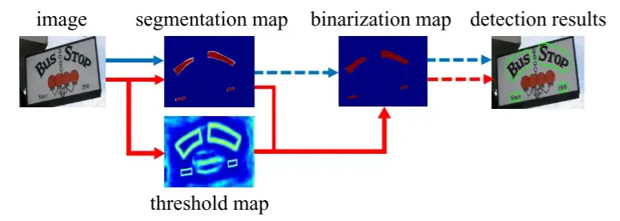
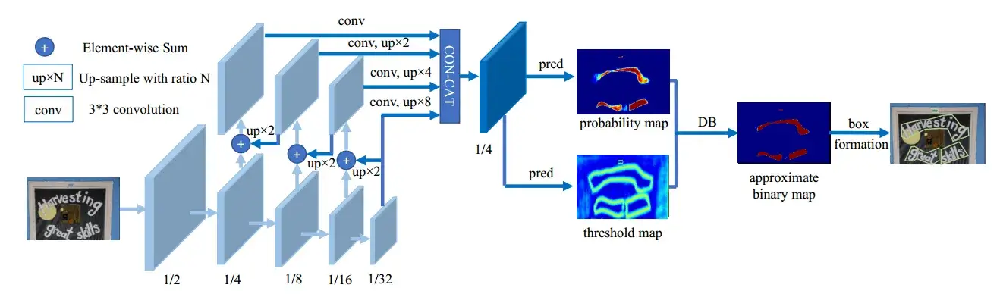
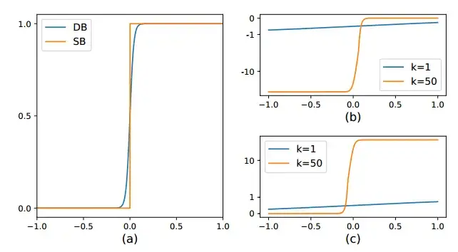
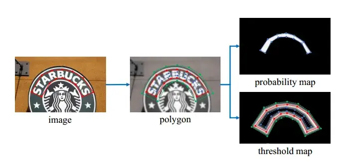

资源
-
PaperWithCode：Real-time Scene Text Detection with Differentiable Binarization | Papers With Code
-
Arxiv：[1911.08947] Real-time Scene Text Detection with Differentiable Binarization (arxiv.org)
-
Gitee：configs/det/dbnet/README_CN.md · MindSpore Lab/mindocr - Gitee.com
-
OCR-(DB+CRNN)-代码分析-实践环境配置及运行 - Lwd_curent (lwd3-byt.github.io)
正文
Abstract
- 基于分割的场景文本检测（可以获得像素级别的预测）可以更精确地描述曲线文本等各种形状的场景文本
- 二值化的后处理对于基于分割的检测至关重要，该检测将分割方法产生的概率图转换为文本的边界框/区域
- 提出了一个名为可微分二值化（DB）的模块，它可以在分割网络中执行二值化过程
- 好使。
Introduction
本文的主要贡献是提出了可微的 DB 模块，它使二值化过程在 CNN 中可以端到端训练。
{kind=link}

- 大多数现有的检测方法使用类似的后处理流水线，如图所示（蓝色箭头后面）：
- 首先，它们设置了一个固定的阈值，用于将分割网络生成的概率图转换为二值图像；
- 然后，使用像素聚类等启发式技术将像素分组到文本实例中。
- 或者，我们的流水线（如图中的红色箭头所示）旨在将二值化操作插入到分割网络中进行联合优化。通过这种方式，可以自适应地预测图像每个位置的阈值，这可以完全区分像素与前景和背景。然而，标准的二值化函数是不可微的，我们提出了一种称为可微分二值化（DB）的近似函数，当与分割网络一起训练时，它是完全可微的。
本文的主要贡献是提出了可微分的 DB 模块，这使得二值化过程在 CNN 中端到端可训练。
Related Work
最近的场景文本检测方法大致可以分为两类：基于回归（Regression-based）的方法和基于分割（Segmentation-based）的方法。
-
基于回归 Regression 的方法是一系列直接回归文本实例的边界框的模型。
-
基于分割 Segmentation 的方法通常结合像素级预测和后处理算法来获得边界框
-
快速的场景文本检测方法注重准确性和推理速度。
Methodology
{kind=link}

{% tabs Model %}
# -*- coding: utf-8 -*-
# @Time : 2019/8/23 21:57
# @Author : zhoujun
from addict import Dict
from torch import nn
import torch.nn.functional as F
from models.backbone import build_backbone
from models.neck import build_neck
from models.head import build_head
class Model(nn.Module):
def __init__(self, model_config: dict):
"""
PANnet
:param model_config: 模型配置
"""
super().__init__()
model_config = Dict(model_config) # 一个配置字典，用于指定模型的结构。转换为 Dict 对象，方便通过属性访问。
# 从配置字典中提取 backbone、neck 和 head 的类型，并分别从配置中删除它们。
backbone_type = model_config.backbone.pop('type')
neck_type = model_config.neck.pop('type')
head_type = model_config.head.pop('type')
# 使用 build_backbone、build_neck 和 build_head 函数构建模型的不同部分。
self.backbone = build_backbone(backbone_type, **model_config.backbone)
self.neck = build_neck(neck_type, in_channels=self.backbone.out_channels, **model_config.neck)
self.head = build_head(head_type, in_channels=self.neck.out_channels, **model_config.head)
# self.name 存储了模型的名字，由 backbone、neck 和 head 的类型组合而成。
self.name = f'{backbone_type}_{neck_type}_{head_type}'
def forward(self, x):
_, _, H, W = x.size() # x 是输入的张量，尺寸为 [batch_size, channels, height, width]。
backbone_out = self.backbone(x) # 使用 self.backbone 处理输入，得到 backbone_out。
neck_out = self.neck(backbone_out) # 使用 self.neck 处理 backbone_out，得到 neck_out。
y = self.head(neck_out) # 使用 self.head 处理 neck_out，得到最终输出 y。
y = F.interpolate(y, size=(H, W), mode='bilinear', align_corners=True) # F.interpolate 用于将输出 y 的尺寸调整为与输入 x 相同，以保持空间分辨率一致。
return y # 最终返回调整后的 y。
if __name__ == '__main__':
import torch
device = torch.device('cpu') # 创建一个 CPU 设备（可以改为 GPU）。
x = torch.zeros(2, 3, 640, 640).to(device) # 创建一个大小为 [2, 3, 640, 640] 的零张量作为输入。
model_config = {
'backbone': {'type': 'resnest50', 'pretrained': True, "in_channels": 3},
'neck': {'type': 'FPN', 'inner_channels': 256}, # 分割头，FPN or FPEM_FFM
'head': {'type': 'DBHead', 'out_channels': 2, 'k': 50},
}
model = Model(model_config=model_config).to(device) # 初始化 Model 对象，传入配置字典。
import time # 测量前向传播的时间。
tic = time.time()
y = model(x)
# 打印出前向传播的时间、输出的形状、模型的名称和模型的详细结构。
print(time.time() - tic)
print(y.shape)
print(model.name)
print(model)
#（可选）将模型的状态字典保存到文件 PAN.pth。
# torch.save(model.state_dict(), 'PAN.pth')- resnet
- MobilenetV3
- shfflenetv2
-
FPN
-
该代码实现了一个特征金字塔网络（FPN）的模块，主要用于融合来自不同尺度的特征图。它包括：
-
特征图减少层：将每个特征图的通道数减少到较小的值。
-
平滑层：对每一层的特征图进行平滑处理。
-
融合和上采样：通过上采样和拼接不同层的特征图来增强特征表示。
-
最终卷积：对融合后的特征图进行进一步处理，以生成最终的输出。
-
-
import torch
import torch.nn.functional as F
from torch import nn
from models.basic import ConvBnRelu
class FPN(nn.Module):
def __init__(self, in_channels, inner_channels=256, **kwargs):
"""
:param in_channels: 基础网络输出的维度
:param kwargs:
"""
super().__init__()
inplace = True
self.conv_out = inner_channels
inner_channels = inner_channels // 4 # 定义了在融合过程中的中间通道数。
# reduce layers 是用于将不同层的特征图通道数减少到 inner_channels 的卷积层。
self.reduce_conv_c2 = ConvBnRelu(in_channels[0], inner_channels, kernel_size=1, inplace=inplace)
self.reduce_conv_c3 = ConvBnRelu(in_channels[1], inner_channels, kernel_size=1, inplace=inplace)
self.reduce_conv_c4 = ConvBnRelu(in_channels[2], inner_channels, kernel_size=1, inplace=inplace)
self.reduce_conv_c5 = ConvBnRelu(in_channels[3], inner_channels, kernel_size=1, inplace=inplace)
# Smooth layers 平滑层，用于进一步处理不同层次的特征图。
self.smooth_p4 = ConvBnRelu(inner_channels, inner_channels, kernel_size=3, padding=1, inplace=inplace)
self.smooth_p3 = ConvBnRelu(inner_channels, inner_channels, kernel_size=3, padding=1, inplace=inplace)
self.smooth_p2 = ConvBnRelu(inner_channels, inner_channels, kernel_size=3, padding=1, inplace=inplace)
self.conv = nn.Sequential(
nn.Conv2d(self.conv_out, self.conv_out, kernel_size=3, padding=1, stride=1),
nn.BatchNorm2d(self.conv_out),
nn.ReLU(inplace=inplace)
) # 是一个卷积层组合，用于处理最终融合后的特征图，包括卷积、批归一化和 ReLU 激活函数。
self.out_channels = self.conv_out # 保存了输出特征图的通道数。
def forward(self, x):
c2, c3, c4, c5 = x # 是一个包含四个特征图的元组 (c2, c3, c4, c5)，这些特征图来自基础网络的不同层。
# Top-down
p5 = self.reduce_conv_c5(c5)
p4 = self._upsample_add(p5, self.reduce_conv_c4(c4))
p4 = self.smooth_p4(p4)
p3 = self._upsample_add(p4, self.reduce_conv_c3(c3))
p3 = self.smooth_p3(p3)
p2 = self._upsample_add(p3, self.reduce_conv_c2(c2))
p2 = self.smooth_p2(p2)
x = self._upsample_cat(p2, p3, p4, p5) # 将所有层的特征图在通道维度上进行拼接。
x = self.conv(x) # 对拼接后的特征图进行最终处理，输出融合后的特征图。
return x
def _upsample_add(self, x, y):
return F.interpolate(x, size=y.size()[2:]) + y # 将输入 x 上采样到与 y 相同的尺寸，并将其与 y 相加。
def _upsample_cat(self, p2, p3, p4, p5): # 将 p2、p3、p4 和 p5 上采样到相同的尺寸，然后在通道维度上拼接它们。
h, w = p2.size()[2:]
p3 = F.interpolate(p3, size=(h, w))
p4 = F.interpolate(p4, size=(h, w))
p5 = F.interpolate(p5, size=(h, w))
return torch.cat([p2, p3, p4, p5], dim=1)- ConvHead
ConvHead是一个非常基础且常见的模块，通过一个 1x1 卷积层和 Sigmoid 激活函数对输入特征图进行变换。它主要用于生成最终的输出特征图，特别是在需要将特征图转换为概率图的任务中。
import torch
from torch import nn
class ConvHead(nn.Module):
def __init__(self, in_channels, out_channels,**kwargs):
super().__init__()
self.conv = nn.Sequential(
# 一个卷积层，使用 1x1 的卷积核来对输入进行线性变换。这种卷积核的大小使得它主要作用于通道维度上的线性变换，而不改变空间维度（宽度和高度）。
nn.Conv2d(in_channels=in_channels, out_channels=out_channels, kernel_size=1),
# 一个激活函数，将卷积层的输出限制在 0 到 1 之间。这个函数通常用于需要输出概率值的任务，例如二分类问题或需要对特征图进行归一化处理的任务。
nn.Sigmoid()
)
def forward(self, x):
return self.conv(x)- DBHead
import torch
from torch import nn
class DBHead(nn.Module):
def __init__(self, in_channels, out_channels, k = 50):
super().__init__()
self.k = k # 用于前向传播时的步长函数的参数。
self.binarize = nn.Sequential( # 一个生成二值图的顺序模块
nn.Conv2d(in_channels, in_channels // 4, 3, padding=1), # 将通道数从 in_channels 降到 in_channels // 4，使用 3x3 的卷积核。
nn.BatchNorm2d(in_channels // 4), # 批量归一化。
nn.ReLU(inplace=True), # 非线性激活函数。
nn.ConvTranspose2d(in_channels // 4, in_channels // 4, 2, 2), # 上采样特征图两次（空间维度翻倍）。
nn.BatchNorm2d(in_channels // 4),
nn.ReLU(inplace=True),
nn.ConvTranspose2d(in_channels // 4, 1, 2, 2),
nn.Sigmoid()) # 输出 0 到 1 之间的值，适用于二值图。
self.binarize.apply(self.weights_init)
self.thresh = self._init_thresh(in_channels) # 使用 _init_thresh 方法生成阈值图。
self.thresh.apply(self.weights_init)
def forward(self, x):
shrink_maps = self.binarize(x) # binarize 模块的输出。
threshold_maps = self.thresh(x) # thresh 模块的输出。
if self.training: # 训练模式下
binary_maps = self.step_function(shrink_maps, threshold_maps) # 使用 step_function 计算二值图。
y = torch.cat((shrink_maps, threshold_maps, binary_maps), dim=1) # 将 shrink_maps、threshold_maps 和 binary_maps 连接在一起。
else:
y = torch.cat((shrink_maps, threshold_maps), dim=1)
return y
def weights_init(self, m): # 使用 He 初始化（kaiming_normal_）初始化卷积层的权重，并为批量归一化层设置特定的值。
classname = m.__class__.__name__
if classname.find('Conv') != -1:
nn.init.kaiming_normal_(m.weight.data)
elif classname.find('BatchNorm') != -1:
m.weight.data.fill_(1.)
m.bias.data.fill_(1e-4)
def _init_thresh(self, inner_channels, serial=False, smooth=False, bias=False):
# 创建一个生成阈值图的顺序模块。使用 nn.Conv2d、批量归一化、ReLU、上采样和 Sigmoid 激活。
in_channels = inner_channels
if serial:
in_channels += 1
self.thresh = nn.Sequential(
nn.Conv2d(in_channels, inner_channels // 4, 3, padding=1, bias=bias),
nn.BatchNorm2d(inner_channels // 4),
nn.ReLU(inplace=True),
self._init_upsample(inner_channels // 4, inner_channels // 4, smooth=smooth, bias=bias),
nn.BatchNorm2d(inner_channels // 4),
nn.ReLU(inplace=True),
self._init_upsample(inner_channels // 4, 1, smooth=smooth, bias=bias),
nn.Sigmoid())
return self.thresh
def _init_upsample(self, in_channels, out_channels, smooth=False, bias=False):
# 定义上采样模块，使用邻近插值加卷积，或者使用转置卷积层。
if smooth: # 平滑上采样
inter_out_channels = out_channels
if out_channels == 1:
inter_out_channels = in_channels
module_list = [
nn.Upsample(scale_factor=2, mode='nearest'), # 使用 nn.Upsample 将输入的空间维度扩大一倍（使用最近邻插值）。
nn.Conv2d(in_channels, inter_out_channels, 3, 1, 1, bias=bias)] # 接着应用 nn.Conv2d 层来对上采样后的特征图进行进一步处理。
if out_channels == 1:
# 如果 out_channels 等于 1，还会添加一个额外的 nn.Conv2d 层，以调整输出通道数。
module_list.append(nn.Conv2d(in_channels, out_channels, kernel_size=1, stride=1, padding=1, bias=True))
return nn.Sequential(module_list)
else:
# 直接使用 nn.ConvTranspose2d 层进行上采样（转置卷积），以实现空间维度的扩展。
return nn.ConvTranspose2d(in_channels, out_channels, 2, 2)
def step_function(self, x, y):
# 应用步长函数生成二值图。此函数使用类似 sigmoid 的曲线来基于 x（收缩图）和 y（阈值图）的差异产生 0 到 1 之间的值。
return torch.reciprocal(1 + torch.exp(-self.k * (x - y))){% endtabs %}
-
将输入图像输入到 feature-pyramid back-bone 中
-
金字塔特征被上采样到相同的尺度并级联以产生特征
-
特征 被用于预测概率图 probability map 和阈值图 threshold map
-
DB 通过 和 计算近似二值映射，得到近似二值图 approximate binary map
-
在 train 期间，监督应用于 、 和 ，其中 和 共享相同的监督
-
在 inference 期间，通过框公式化模块可以容易地从 或 中获得边界框
Binarization
Standard binarization
就是一刀切。
给定由分割网络产生的概率图 ，其中 和 表示图的高度和宽度，必须将其转换为二值图 ，其中值为 被认为是有效的文本区域。其中 是预定义的阈值， 表示 map 中的坐标点。
Differentiable binarization
上式不可微分，在 train 过程中就不可以与分割网络一起进行优化，因此，我们建议使用阶跃函数进行二值化：
其中 是近似二进制映射； 是从网络学习的自适应阈值映射； 表示放大因子。 根据经验设置为 50。
def step_function(self, x, y):
return torch.reciprocal(1 + torch.exp(-self.k * (x - y)))
# 这个 step_function 就是 Differentiable binarization 的公式{kind=link}

DB 提高性能的原因可以通过梯度的反向传播来解释。以二元交叉熵损失为例。定义 作为我们的 DB 函数，其中 。那么正标签的损失 和负标签的损失 分别为：
我们可以很容易地用链式法则计算损失的微分：
和 的微分中我们可以看出：
- 梯度被放大因子 放大;
- 梯度的放大对于大多数错误预测的区域都是显著的（对于 ，；对于 ，），从而有利于优化，并有助于产生更独特的预测。此外，当 时， 的梯度在前景和背景之间受到 的影响和重新缩放。
Adaptive threshold
自适应阈值。
Deformable convolution
可变形卷积可以为模型提供灵活的感受野，这对极端长宽比的文本实例尤其有益。接下来，在 ResNet-18 或 ResNet-50 主干中的 conv3、conv4 和 conv5 阶段，在所有 3×3 卷积层中应用调制可变形卷积。
Label generation
{kind=link}

概率图的标签生成受到 PSENet 的启发。给定一个文本图像，其文本区域的每个多边形由一组线段描述：
是顶点的数量，在不同的数据集中可能不同，例如，ICDAR 2015 数据集为 4（Karatzas 等人），CTW1500 数据集为 16。
通过使用 Vatti 剪裁算法将多边形 缩小为 来生成正区域。收缩的偏移量 是根据原始多边形的周长 和面积 计算得出的：
其中 是收缩率，根据经验设置为 0.4。
通过类似的过程，我们可以为阈值映射生成标签。首先，将文本多边形 以与 相同的偏移量 展开。我们将 和 之间的间隙视为文本区域的边界，其中可以通过计算到 中最近线段的距离来生成阈值图的标签。
在 data_loader 中实现。
- 根据人工标记的 gt 框（一系列坐标点），进行一些膨胀（dilate）和缩小（shrink）的操作
- 做一些 gt 框内的计算来得到
probability_map和threshold_map
Optimization
损失函数 可以表示为概率映射 的损失、二进制映射 的损失和阈值映射 的损失的加权和
和 分别取 1.0 和 10。
对 和 都应用了二进制交叉熵（BCE）损失：
class BalanceCrossEntropyLoss(nn.Module):
# 这个损失函数是交叉熵损失的一个平衡版本，用于处理类不平衡问题。它在计算损失时对正样本和负样本进行不同的加权，以便在训练时能更好地处理类别不平衡的情况。
'''
Balanced cross entropy loss.
Shape:
- Input: :math:`(N, 1, H, W)`
- GT: :math:`(N, 1, H, W)`, same shape as the input
- Mask: :math:`(N, H, W)`, same spatial shape as the input
- Output: scalar.
Examples::
>>> m = nn.Sigmoid()
>>> loss = nn.BCELoss()
>>> input = torch.randn(3, requires_grad=True)
>>> target = torch.empty(3).random_(2)
>>> output = loss(m(input), target)
>>> output.backward()
'''
def __init__(self, negative_ratio=3.0, eps=1e-6):
# negative_ratio：一个负样本的比例，默认值为 3.0，表示负样本的数量是正样本数量的 3 倍。
# eps: 一个小的常数（1e-6），用于避免除零错误。
super(BalanceCrossEntropyLoss, self).__init__()
self.negative_ratio = negative_ratio
self.eps = eps
def forward(self,
pred: torch.Tensor, # pred: 网络的预测值，形状为 (N, 1, H, W)。
gt: torch.Tensor, # 目标值，形状同 pred。
mask: torch.Tensor, # 掩码，形状为 (N, H, W)，用来指示正样本区域。
return_origin=False):
'''
Args:
pred: shape :math:`(N, 1, H, W)`, the prediction of network
gt: shape :math:`(N, 1, H, W)`, the target
mask: shape :math:`(N, H, W)`, the mask indicates positive regions
'''
# 计算正样本和负样本的数量，并使用负样本比例限制负样本的数量。
positive = (gt * mask).byte()
negative = ((1 - gt) * mask).byte()
positive_count = int(positive.float().sum())
negative_count = min(int(negative.float().sum()), int(positive_count * self.negative_ratio))
loss = nn.functional.binary_cross_entropy(pred, gt, reduction='none')
# 计算每个位置的二进制交叉熵损失。
positive_loss = loss * positive.float()
negative_loss = loss * negative.float()
# negative_loss, _ = torch.topk(negative_loss.view(-1).contiguous(), negative_count)
# 对正样本和负样本分别计算损失，然后将负样本的损失限制为一定的数量。
negative_loss, _ = negative_loss.view(-1).topk(negative_count)
# 最终计算加权的总损失并返回。
balance_loss = (positive_loss.sum() + negative_loss.sum()) / (positive_count + negative_count + self.eps)
if return_origin:
return balance_loss, loss
return balance_loss 被计算为扩展文本多边形 内的预测和标签之间的 距离之和：
class MaskL1Loss(nn.Module):
# 这是一个基于 L1 损失的变体，结合了掩码，仅在感兴趣的区域计算损失。
def __init__(self, eps=1e-6):
super(MaskL1Loss, self).__init__()
self.eps = eps
def forward(self, pred: torch.Tensor, gt, mask):
# 计算预测值和真实值之间的绝对差异，并根据掩码计算加权和。
loss = (torch.abs(pred - gt) * mask).sum() / (mask.sum() + self.eps)
return loss 在推理阶段，我们可以使用概率图或近似二进制图来生成文本边界框，这会产生几乎相同的结果。
其中 是收缩多边形的面积； 是收缩多边形的周长； 根据经验设定为 1.5。
DB_loss.py：
from torch import nn
from models.losses.basic_loss import BalanceCrossEntropyLoss, MaskL1Loss, DiceLoss
class DBLoss(nn.Module):
def __init__(self, alpha=1.0, beta=10, ohem_ratio=3, reduction='mean', eps=1e-6):
"""
Implement PSE Loss.
:param alpha: binary_map loss 前面的系数
:param beta: threshold_map loss 前面的系数
:param ohem_ratio: OHEM 的比例
:param reduction: 'mean' or 'sum'对 batch 里的 loss 算均值或求和
"""
super().__init__()
assert reduction in ['mean', 'sum'], " reduction must in ['mean','sum']"
# alpha 和 beta 是控制不同损失项权重的系数。
self.alpha = alpha
self.beta = beta
self.bce_loss = BalanceCrossEntropyLoss(negative_ratio=ohem_ratio)
self.dice_loss = DiceLoss(eps=eps)
self.l1_loss = MaskL1Loss(eps=eps)
self.ohem_ratio = ohem_ratio # 用于 OHEM（在线困难样本挖掘）的比例。
self.reduction = reduction # 指定了损失的归约方式（均值或总和）。
def forward(self, pred, batch):
shrink_maps = pred[:, 0, :, :]
threshold_maps = pred[:, 1, :, :]
binary_maps = pred[:, 2, :, :]
loss_shrink_maps = self.bce_loss(shrink_maps, batch['shrink_map'], batch['shrink_mask']) # 对 shrink_maps 使用交叉熵损失（OHEM）。
loss_threshold_maps = self.l1_loss(threshold_maps, batch['threshold_map'], batch['threshold_mask']) # 对 threshold_maps 使用 L1 损失。
metrics = dict(loss_shrink_maps=loss_shrink_maps, loss_threshold_maps=loss_threshold_maps) # 如果 pred 包含多于两个通道，还计算 binary_maps 的 Dice 损失。
if pred.size()[1] > 2:
loss_binary_maps = self.dice_loss(binary_maps, batch['shrink_map'], batch['shrink_mask'])
metrics['loss_binary_maps'] = loss_binary_maps
loss_all = self.alpha * loss_shrink_maps + self.beta * loss_threshold_maps + loss_binary_maps # 汇总各个损失项，并根据是否包含 binary_maps 来调整总损失 (loss_all)。
metrics['loss'] = loss_all # 返回一个包含各个损失项和总损失的字典 metrics。
else:
metrics['loss'] = loss_shrink_maps
return metricsExperiments
{% tabs train %}
from __future__ import print_function
import argparse
import os
import anyconfig
def init_args():
parser = argparse.ArgumentParser(description='DBNet.pytorch')
parser.add_argument('--config_file', default='config/open_dataset_resnet18_FPN_DBhead_polyLR.yaml', type=str)
parser.add_argument('--local_rank', dest='local_rank', default=0, type=int, help='Use distributed training')
args = parser.parse_args()
return args
def main(config):
# 导入必要的模块，包括模型构建、损失函数、数据加载器、训练器、后处理和评估指标。
import torch
from models import build_model, build_loss
from data_loader import get_dataloader
from trainer import Trainer
from post_processing import get_post_processing
from utils import get_metric
# 检查是否有多个 GPU，如果有，则初始化分布式训练环境。
if torch.cuda.device_count() > 1:
torch.cuda.set_device(args.local_rank)
torch.distributed.init_process_group(backend="nccl", init_method="env://", world_size=torch.cuda.device_count(), rank=args.local_rank)
config['distributed'] = True
else:
config['distributed'] = False
config['local_rank'] = args.local_rank
# 根据配置文件加载训练和验证数据加载器。
train_loader = get_dataloader(config['dataset']['train'], config['distributed'])
assert train_loader is not None
if 'validate' in config['dataset']:
validate_loader = get_dataloader(config['dataset']['validate'], False)
else:
validate_loader = None
# 构建损失函数并将其移动到 GPU。
criterion = build_loss(config['loss']).cuda()
# 配置模型的输入通道数（彩色图像为 3 通道，灰度图像为 1 通道）。
config['arch']['backbone']['in_channels'] = 3 if config['dataset']['train']['dataset']['args']['img_mode'] != 'GRAY' else 1
model = build_model(config['arch'])
# 构建模型、后处理函数和评估指标。
post_p = get_post_processing(config['post_processing'])
metric = get_metric(config['metric'])
# 创建 Trainer 对象并开始训练。
trainer = Trainer(config=config,
model=model,
criterion=criterion,
train_loader=train_loader,
post_process=post_p,
metric_cls=metric,
validate_loader=validate_loader)
trainer.train()
if __name__ == '__main__':
# 处理模块路径，确保当前目录和上级目录在 Python 路径中。
import sys
import pathlib
__dir__ = pathlib.Path(os.path.abspath(__file__))
sys.path.append(str(__dir__))
sys.path.append(str(__dir__.parent.parent))
# project = 'DBNet.pytorch' # 工作项目根目录
# sys.path.append(os.getcwd().split(project)[0] + project)
# 使用 anyconfig 读取配置文件，并解析基础配置。
from utils import parse_config
args = init_args()
assert os.path.exists(args.config_file)
config = anyconfig.load(open(args.config_file, 'rb'))
if 'base' in config:
config = parse_config(config)
# 调用 main 函数开始模型训练。
main(config)import time
import torch
import torchvision.utils as vutils
from tqdm import tqdm
from base import BaseTrainer
from utils import WarmupPolyLR, runningScore, cal_text_score
class Trainer(BaseTrainer):
# 初始化：__init__ 方法接受多个参数，包括配置 (config)、模型 (model)、损失函数 (criterion)、训练和验证数据加载器 (train_loader 和 validate_loader)、评估指标类 (metric_cls)、以及可选的后处理函数 (post_process)。
def __init__(self, config, model, criterion, train_loader, validate_loader, metric_cls, post_process=None):
super(Trainer, self).__init__(config, model, criterion)
# 参数设置：从配置中读取训练迭代次数 (show_images_iter)，并初始化训练和验证数据加载器。若验证数据加载器存在，确保提供了后处理函数和评估指标类。
self.show_images_iter = self.config['trainer']['show_images_iter']
self.train_loader = train_loader
if validate_loader is not None:
assert post_process is not None and metric_cls is not None
self.validate_loader = validate_loader
self.post_process = post_process
self.metric_cls = metric_cls
self.train_loader_len = len(train_loader)
# 学习率调度器：根据配置，设置学习率调度器 WarmupPolyLR，用于调整学习率。它支持学习率的预热和多项式衰减。
if self.config['lr_scheduler']['type'] == 'WarmupPolyLR':
warmup_iters = config['lr_scheduler']['args']['warmup_epoch'] * self.train_loader_len
if self.start_epoch > 1:
self.config['lr_scheduler']['args']['last_epoch'] = (self.start_epoch - 1) * self.train_loader_len
self.scheduler = WarmupPolyLR(self.optimizer, max_iters=self.epochs * self.train_loader_len,
warmup_iters=warmup_iters, **config['lr_scheduler']['args'])
# 日志记录：记录训练和验证数据集的样本数量和数据加载器的数量。
if self.validate_loader is not None:
self.logger_info(
'train dataset has {} samples,{} in dataloader, validate dataset has {} samples,{} in dataloader'.format(
len(self.train_loader.dataset), self.train_loader_len, len(self.validate_loader.dataset), len(self.validate_loader)))
else:
self.logger_info('train dataset has {} samples,{} in dataloader'.format(len(self.train_loader.dataset), self.train_loader_len))
# 这段代码定义了 _train_epoch 方法，用于训练模型一个训练周期（epoch）。
def _train_epoch(self, epoch):
# 模型训练模式：调用 self.model.train() 设置模型为训练模式。
self.model.train()
# 时间记录：记录周期和批次的开始时间。
epoch_start = time.time()
batch_start = time.time()
train_loss = 0.
running_metric_text = runningScore(2)
# 初始化：初始化累计损失 train_loss 和运行中的指标 running_metric_text，并获取当前学习率 lr。
lr = self.optimizer.param_groups[0]['lr']
# 遍历数据：遍历训练数据加载器中的每个批次：
for i, batch in enumerate(self.train_loader):
if i >= self.train_loader_len:
break
self.global_step += 1
lr = self.optimizer.param_groups[0]['lr']
# 数据进行转换和丢到 gpu
# 将数据移动到 GPU 上。
for key, value in batch.items():
if value is not None:
if isinstance(value, torch.Tensor):
batch[key] = value.to(self.device)
cur_batch_size = batch['img'].size()[0]
# 通过模型生成预测 preds。
preds = self.model(batch['img'])
# 计算损失 loss_dict，并执行反向传播和优化步骤。
loss_dict = self.criterion(preds, batch)
# backward
self.optimizer.zero_grad()
loss_dict['loss'].backward()
self.optimizer.step()
# 如果使用了 WarmupPolyLR，更新学习率调度器。
if self.config['lr_scheduler']['type'] == 'WarmupPolyLR':
self.scheduler.step()
# acc iou
# 计算指标 score_shrink_map，并记录损失和准确度信息。
score_shrink_map = cal_text_score(preds[:, 0, :, :], batch['shrink_map'], batch['shrink_mask'], running_metric_text,
thred=self.config['post_processing']['args']['thresh'])
# loss 和 acc 记录到日志
# 日志记录：将损失和各个指标记录为字符串 loss_str，并累加到总训练损失 train_loss。
loss_str = 'loss: {:.4f}, '.format(loss_dict['loss'].item())
for idx, (key, value) in enumerate(loss_dict.items()):
loss_dict[key] = value.item()
if key == 'loss':
continue
loss_str += '{}: {:.4f}'.format(key, loss_dict[key])
if idx < len(loss_dict) - 1:
loss_str += ', '
train_loss += loss_dict['loss']
acc = score_shrink_map['Mean Acc']
iou_shrink_map = score_shrink_map['Mean IoU']
# 条件：每隔 log_iter 步记录一次日志。
# 指标：计算每秒处理样本的速度，并记录准确率、IoU、损失和学习率。
# 日志记录：使用 self.logger_info 输出这些指标，以便监控训练过程。
if self.global_step % self.log_iter == 0:
batch_time = time.time() - batch_start
self.logger_info(
'[{}/{}], [{}/{}], global_step: {}, speed: {:.1f} samples/sec, acc: {:.4f}, iou_shrink_map: {:.4f}, {}, lr:{:.6}, time:{:.2f}'.format(
epoch, self.epochs, i + 1, self.train_loader_len, self.global_step, self.log_iter * cur_batch_size / batch_time, acc,
iou_shrink_map, loss_str, lr, batch_time))
batch_start = time.time()
# 条件：如果启用了 TensorBoard，则写入日志。
# 损失和指标：将各种训练指标和损失记录到 TensorBoard 中以便可视化。
if self.tensorboard_enable and self.config['local_rank'] == 0:
# write tensorboard
for key, value in loss_dict.items():
self.writer.add_scalar('TRAIN/LOSS/{}'.format(key), value, self.global_step)
self.writer.add_scalar('TRAIN/ACC_IOU/acc', acc, self.global_step)
self.writer.add_scalar('TRAIN/ACC_IOU/iou_shrink_map', iou_shrink_map, self.global_step)
self.writer.add_scalar('TRAIN/lr', lr, self.global_step)
# 图像可视化：条件：每隔 show_images_iter 步可视化一次图像。
# 图像和标签：将原始图像、真实标签和模型预测结果添加到 TensorBoard 中。
# 可视化：使用 vutils.make_grid 创建图像网格以便更好地可视化。
if self.global_step % self.show_images_iter == 0:
# show images on tensorboard
self.inverse_normalize(batch['img'])
self.writer.add_images('TRAIN/imgs', batch['img'], self.global_step)
# shrink_labels and threshold_labels
shrink_labels = batch['shrink_map']
threshold_labels = batch['threshold_map']
shrink_labels[shrink_labels <= 0.5] = 0
shrink_labels[shrink_labels > 0.5] = 1
show_label = torch.cat([shrink_labels, threshold_labels])
show_label = vutils.make_grid(show_label.unsqueeze(1), nrow=cur_batch_size, normalize=False, padding=20, pad_value=1)
self.writer.add_image('TRAIN/gt', show_label, self.global_step)
# model output
show_pred = []
for kk in range(preds.shape[1]):
show_pred.append(preds[:, kk, :, :])
show_pred = torch.cat(show_pred)
show_pred = vutils.make_grid(show_pred.unsqueeze(1), nrow=cur_batch_size, normalize=False, padding=20, pad_value=1)
self.writer.add_image('TRAIN/preds', show_pred, self.global_step)
# 总结：返回一个包含每个 epoch 的平均训练损失、学习率、总时间和 epoch 编号的字典。
return {'train_loss': train_loss / self.train_loader_len, 'lr': lr, 'time': time.time() - epoch_start,
'epoch': epoch}
def _eval(self, epoch):
# 这将影响模型的行为，比如在评估时关闭 dropout 和 batch normalization。
self.model.eval()
# torch.cuda.empty_cache() # speed up evaluating after training finished
# raw_metrics 用来存储每个批次的评估指标，total_frame 用来记录总的处理帧数，total_time 记录总的处理时间。
raw_metrics = []
total_frame = 0.0
total_time = 0.0
for i, batch in tqdm(enumerate(self.validate_loader), total=len(self.validate_loader), desc='test model'):
# 关闭梯度计算：这用于避免计算梯度，从而减少内存使用和加快计算速度。
with torch.no_grad():
# 数据进行转换和丢到gpu
for key, value in batch.items():
if value is not None:
if isinstance(value, torch.Tensor):
batch[key] = value.to(self.device)
# 记录开始时间并进行预测：
start = time.time()
preds = self.model(batch['img'])
# 对预测结果进行后处理：
boxes, scores = self.post_process(batch, preds,is_output_polygon=self.metric_cls.is_output_polygon)
# 更新统计数据：
total_frame += batch['img'].size()[0]
total_time += time.time() - start
# 计算并记录评估指标：
raw_metric = self.metric_cls.validate_measure(batch, (boxes, scores))
raw_metrics.append(raw_metric)
# 汇总指标：
metrics = self.metric_cls.gather_measure(raw_metrics)
# 记录每秒帧数（FPS）：
self.logger_info('FPS:{}'.format(total_frame / total_time))
# 返回指标：
return metrics['recall'].avg, metrics['precision'].avg, metrics['fmeasure'].avg
def _on_epoch_finish(self):
# 这个方法在每个训练周期结束时执行，执行以下操作：
# 记录当前训练周期的信息：
self.logger_info('[{}/{}], train_loss: {:.4f}, time: {:.4f}, lr: {}'.format(
self.epoch_result['epoch'], self.epochs, self.epoch_result['train_loss'], self.epoch_result['time'],
self.epoch_result['lr']))
# 保存模型检查点：
net_save_path = '{}/model_latest.pth'.format(self.checkpoint_dir)
net_save_path_best = '{}/model_best.pth'.format(self.checkpoint_dir)
# 如果是主进程：
if self.config['local_rank'] == 0:
# 保存当前模型检查点：
self._save_checkpoint(self.epoch_result['epoch'], net_save_path)
save_best = False
if self.validate_loader is not None and self.metric_cls is not None: # 使用 f1 作为最优模型指标
# 评估模型性能（如果有验证集和指标类）：
recall, precision, hmean = self._eval(self.epoch_result['epoch'])
# 记录评估指标到 TensorBoard（如果启用）：
if self.tensorboard_enable:
self.writer.add_scalar('EVAL/recall', recall, self.global_step)
self.writer.add_scalar('EVAL/precision', precision, self.global_step)
self.writer.add_scalar('EVAL/hmean', hmean, self.global_step)
self.logger_info('test: recall: {:.6f}, precision: {:.6f}, f1: {:.6f}'.format(recall, precision, hmean))
# 根据 F1 分数或训练损失判断是否保存最佳模型：
if hmean >= self.metrics['hmean']:
save_best = True
self.metrics['train_loss'] = self.epoch_result['train_loss']
self.metrics['hmean'] = hmean
self.metrics['precision'] = precision
self.metrics['recall'] = recall
self.metrics['best_model_epoch'] = self.epoch_result['epoch']
else:
if self.epoch_result['train_loss'] <= self.metrics['train_loss']:
save_best = True
self.metrics['train_loss'] = self.epoch_result['train_loss']
self.metrics['best_model_epoch'] = self.epoch_result['epoch']
# 记录最佳模型的信息并保存最佳模型：
best_str = 'current best, '
for k, v in self.metrics.items():
best_str += '{}: {:.6f}, '.format(k, v)
self.logger_info(best_str)
if save_best:
import shutil
shutil.copy(net_save_path, net_save_path_best)
self.logger_info("Saving current best: {}".format(net_save_path_best))
else:
self.logger_info("Saving checkpoint: {}".format(net_save_path))
def _on_train_finish(self):
# 这个方法在训练完成时执行，执行以下操作：
# 记录所有指标信息：
for k, v in self.metrics.items():
self.logger_info('{}:{}'.format(k, v))
# 记录训练完成的信息：
self.logger_info('finish train'){% endtabs %}
SynthText 是一个由 800k 张图像组成的合成数据集。这些图像是从 8k 个背景图像合成的。此数据集仅用于预训练我们的模型。
训练数据的数据扩充包括：
- 角度范围为 的随机旋转
- 随机裁剪
- 随机翻转
- 为了提高训练效率，所有处理后的图像都被重新调整为
- 使用 SynthText 数据集对它们进行 100k 次迭代的预训练。
- 在 1200 个 epoch 的相应真实世界数据集上微调模型。
- 训练批次大小设置为 16。我们遵循多学习率策略，当前迭代的学习率等于初始学习率乘以
- 初始学习率设置为 0.007， 为 0.9
- 使用 0.0001 的权重衰减和 0.9 的动量。
- 训练批次大小设置为 16。我们遵循多学习率策略，当前迭代的学习率等于初始学习率乘以
Ablation study
证明各个模块都能提高性能。
Comparisons with previous methods
P、R、F 三个指标都最佳。
- TP: true positive。实际为正，预测为正。
- FP: false positive。实际为负，预测为正。
- TN: true negative。实际为负，预测为负。
- FN: false negative。实际为正，预测为负。
在 TotalText 下的训练结果：
| Method | P | R | F |
|---|---|---|---|
| DB-ResNet-18 (800) | 88.3 | 77.9 | 82.8 |
| DB-ResNet-50 (800) | 87.1 | 82.5 | 84.7 |
在 CTW1500 下的训练结果：
| Method | P | R | F |
|---|---|---|---|
| Ours-ResNet18 (1024) | 84.8 | 77.5 | 81.0 |
| Ours-ResNet50 (1024) | 86.9 | 80.2 | 83.4 |
Limitation
我们的方法的一个局限性是它不能处理 “文本中的文本” 的情况，这意味着一个文本实例在另一个文本例子中。尽管收缩的文本区域在文本实例不在另一个文本实例的中心区域的情况下很有帮助，但当文本实例正好位于另一个文字实例的中心区时，它会失败。这是基于分割的场景文本检测器的常见限制。
Conclusion
好使。